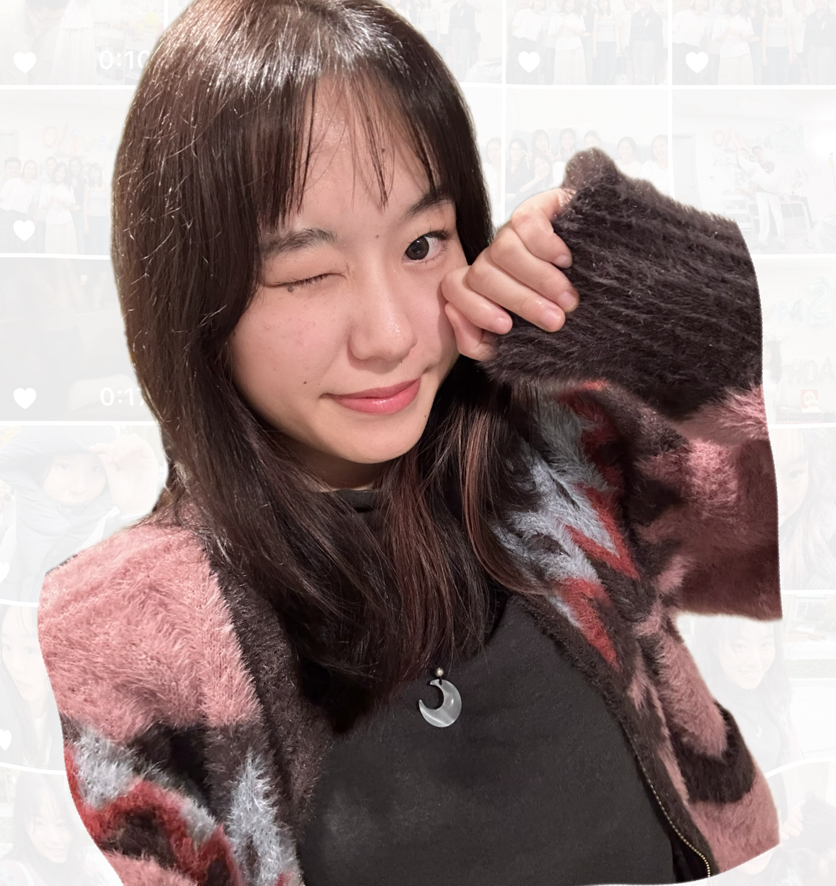

UW HCDE MS · UX design · research-led craft
Calm interfaces with a bold hand.
I design digital
I’m Yuchen Feng, a University of Washington HCDE student with a minor in Neural Computation & Engineering. My work sits between UX design, product thinking, and research-informed systems.
I’m especially interested in complex products that need calm interaction design, rigorous thinking, and community-centered decisions.
Placeholder

01
I care about experiences that feel quiet in structure, but precise and unmistakable in their details.
02
Placeholder: add a second short note here about your design values or focus.
Selected work
Projects with clear intention and distinct tone.


About
A fuller story deserves its own page.
I’ve added a dedicated about page so this homepage can stay focused on portfolio review while still giving room for your background, interests, awards, and community work.
Placeholder: add your personal story, design philosophy, and the kinds of opportunities you are actively looking for.